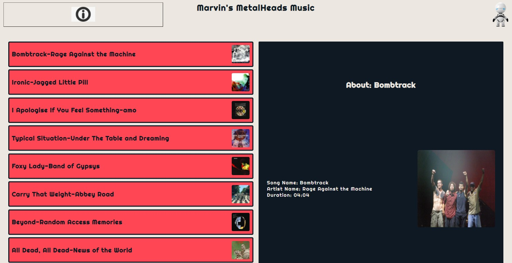
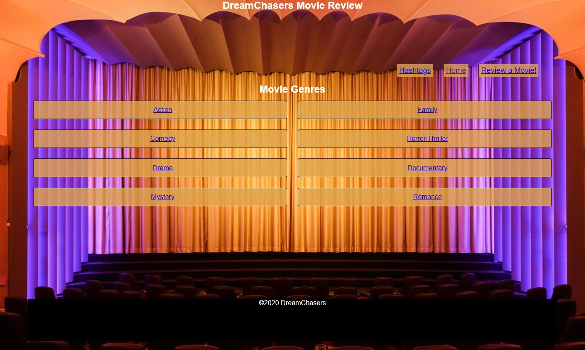
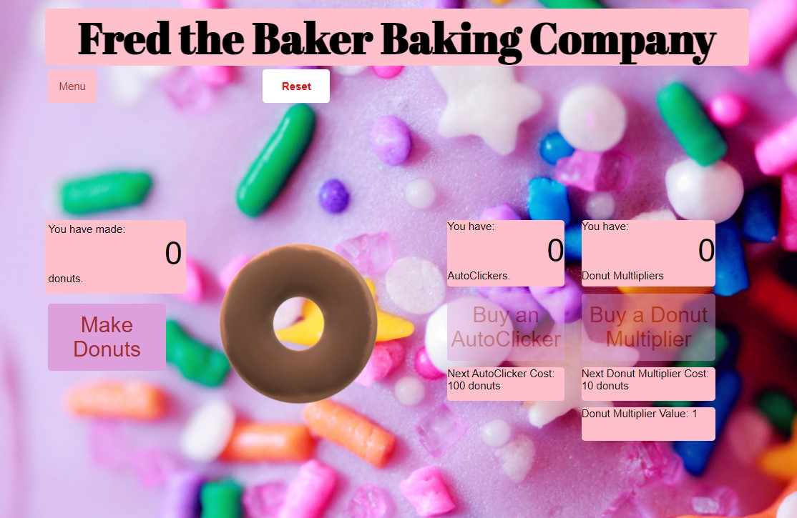

Songs and Albums API

With a small team of five students, created a Songs and Albums API which shows songs in the API. When the song title is clicked on, the song information is displayed in the box on the right. When the album is clicked on the album information
appears in the box on the right. A cool feature we added was that the image in the black box is a flip-card that shows the album cover if displaying the song information or the list of songs on the album if the album information
is displaying. This API has a Java back-end and uses JavaScript and DOM manipulation to render the single page application.
Movie Reviews MVC

With a small team of four students, created this MVC for Movie Reviews. The MVC houses movies and reviews of movies. The user view is a list of movies by genre. Users can add hashtags to any movie review and view movies by the hashtags.
This MVC uses a Java back-end with SpringBoot and Hibernate to render the view and store the data for this MVC.
Donut Maker App

Independently created a Donut Maker Application in JavaScript based on the Cookie Clicker Application. Features include: an Autoclicker an a multiplier that are able to be purchased with increasing numbers of donuts. A tile shows the
cost of the next autoclicker or multiplier and another shows how many donuts have been made. Buttons to purchase the autoclicker or multiplier are grayed out until enough donuts are available to purchase the next autoclicker or
multiplier.